I started with pictures of myself (first/left) and my friend Joe (second/right). Some rescaling was necessary to make the images the same size. Consistency in size made the rest of the project easier.
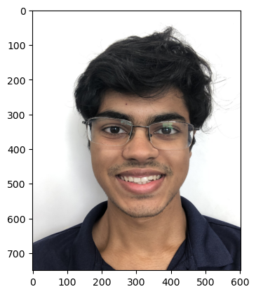
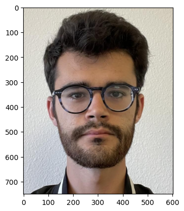
I began by making a mesh grid of keypoints on each of our faces. I used the Delaunay triangulation of the average each set of keypoints (one corresponding to me, and the other to Joe).
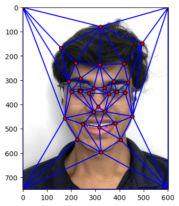
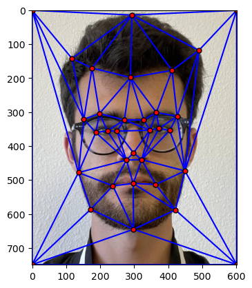
Part 2: Computing the Midway Face
The tricky part of solving this problem was producing an affine transformation that maps one triangle to another. To create this, I envisioned mapping the initial triangle to a right triangle, then the right triangle to my final desired triangle.
This way of conceptualizing the problem made the process of coding the affine transformation in python very smooth.
Once I made the affine transformation, I mapped the triangular spaces of the Samyak image and the Joe image to the triangular mesh of the midway image (whose shape was simply the mean of keypoints on Samyak and Joe).
Then, I averaged the colors of each image to obtain my result!
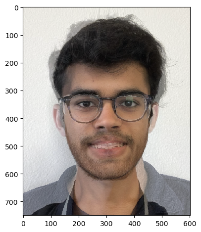
The tricky part of this was interpolating - that is, when I determined which pixels from the original image correspond with a pixel I am trying to calculate in the final image, I had to compute a weighted mean of surrounding pixels.
Part 3: The Morph Sequence
Producing the morph sequence was the most rewarding portion of this project!
Given my work in the previous part, the implementation here was rather simple. Essentially, the shape of the destination to which both images were being mapped was now a weighted mean of the two image shapes. As the gif progresses, the weight favors the latter image (Samyak).
Similarly, the color of the final image is also a changing weighted average of pixels from each image.
Morphing sequence from Joe to Samyak
Part 4: The "Mean Face" of a Population
For this portion of the project, I used the FEI face database.
The database has images with their corresponding keypoints. A couple of examples are shown below.
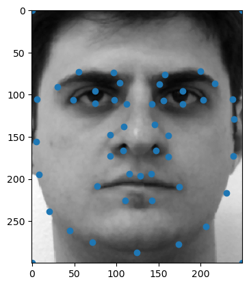
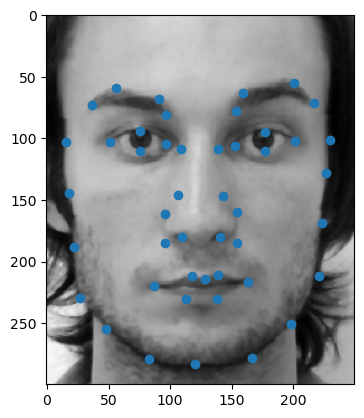
First, I used the keypoints of all images in the dataset to determine the average face shape. To take an average of these faces, I began by reshaping them to the average face shape.
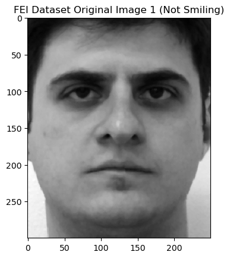
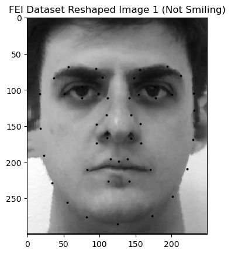
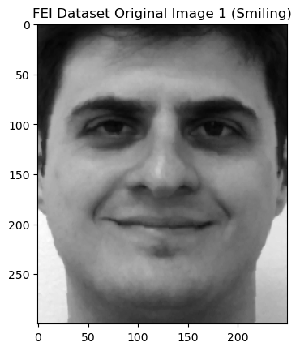
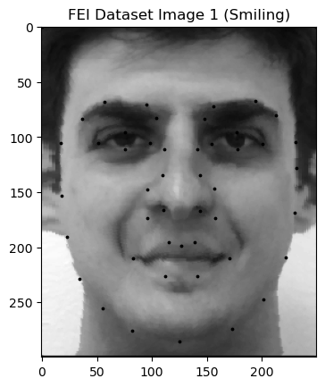
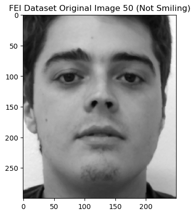
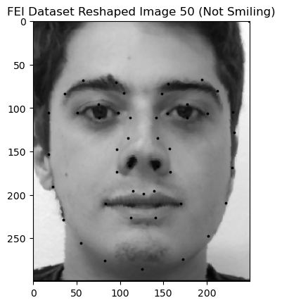
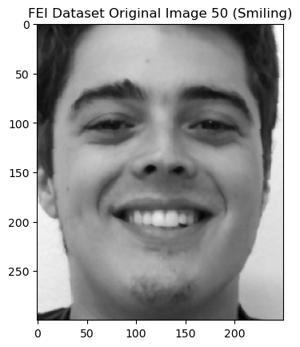
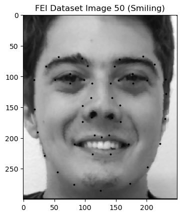
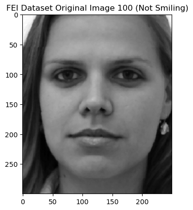
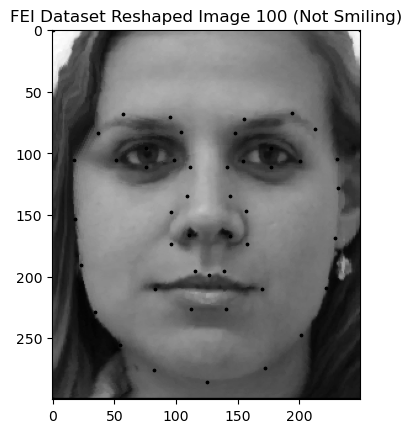
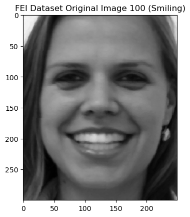
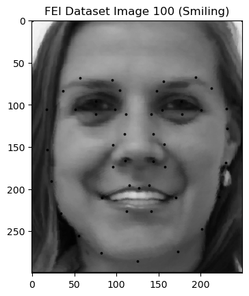
Next, I took an average across all of these reshaped images. The dataset is divided into smiling and non-smiling images, so in that spirit, I took averages of smiling and non-smiling subsets of the dataset as well.
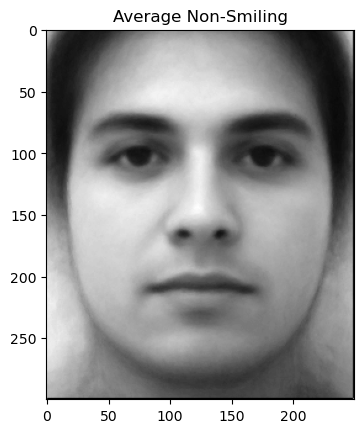
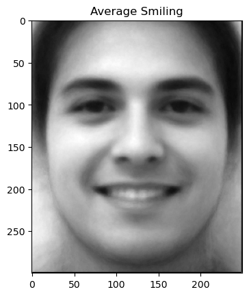
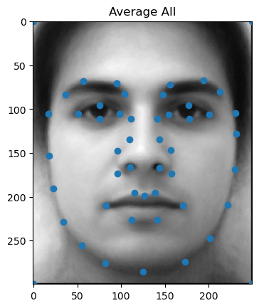
Finally, I warped my own face (readjustments I made to my face and its keypoints are shown in the leftmost image below) into the average smiling face of the previous dataset (middle). I also warped the average smiling face into the shape of my face (right)!
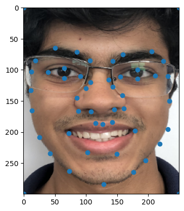
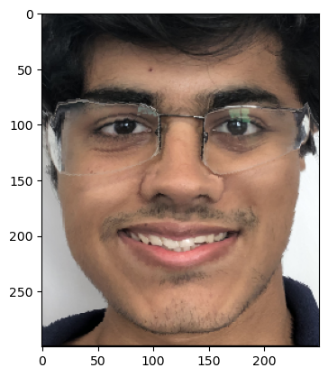
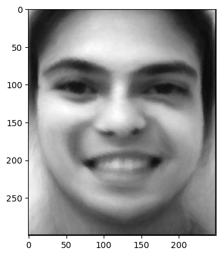
Part 5: Caricatures - Extrapolating from the Mean
In this part of the project, I wanted to see how I could control the extent to which I was smiling by morphing my image with the shape of the non-smiling average image from the previous part.
I manipulated a parameter "alpha" which determines the weight of image shapes to produce a final (target) image shape.
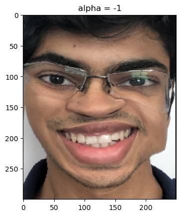
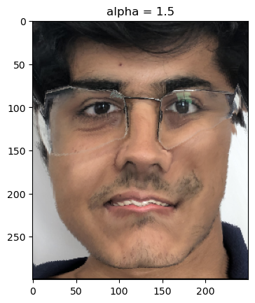
A negative alpha seemed to overemphasize features that were in my original image which weren't present in the non-smiling average image (in this case a smile).
Similarly, a positive alpha seemed to overemphasize features that were NOT in my original image which were present in the non-smiling average image (in this case a serious face).
Bells and Whistles: Feminizing Samyak
I wanted to see if I could tune a specific feature of an image, similar to the way I tuned the smile on my face in the previous part.
In this part, I explore feminizing an image of myself! I began by taking an average across only smiling women in the previous dataset (I chose smiling women because I am smiling in the original image).
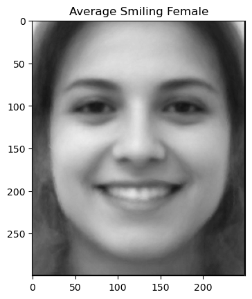
Below are images of my face reshaped to the female average, morphed in appearance to the female average, and morphed in both shape and appearance to the female average.
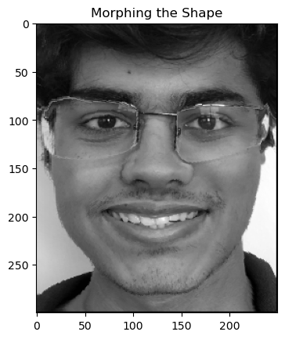
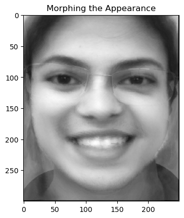
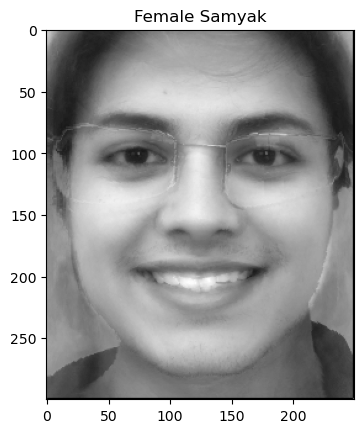
Overall, this project was extremely rewarding in its challenges!